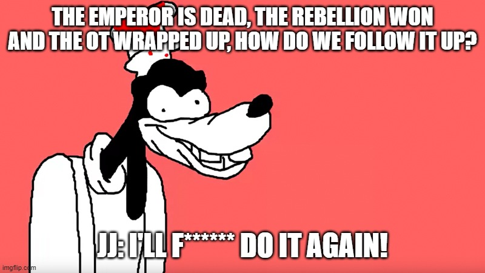
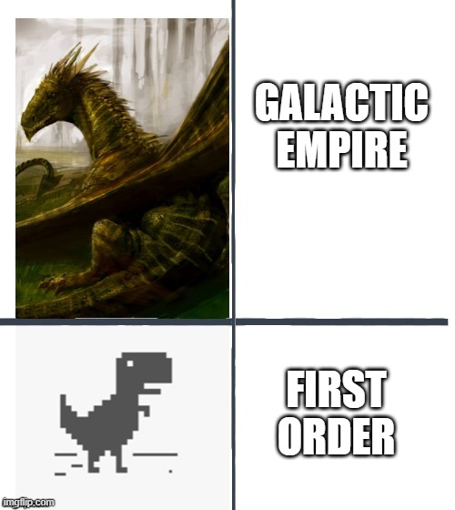

This is a spoiler warning, if you care about me spoiling the movie, Don't. The Mandalorian is on Disney+, settle for that instead.
My review summed up in the list below:
Looking back at Force Awakens, I realized that the real problem with it is not because it's a rehash of New Hope, but rather it just doesn't work as a sequel. When going from Return of the Jedi, the rebellion overthrew the empire and won the war re-establishing democracy again but in Force Awakens this whole new civil war just lands on top of us like a ton of bricks! There was no explanation to how it came to be like the prequel trilogy did with the war in OT, Just two hours of JJ going "Hey remember this?" How did the First Order came to be and why the hell was it wasting their resourses trying to find this one jedi when there are better things to worry about? Are they even competant at all? JJ:"remember how threatning the empire was?"



2 stars to be generous, settle for Mandalorian instead